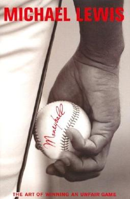

Moneyball: The Art of Winning an Unfair Game
Description:
For the film based on the book, see Moneyball (film). For the statistical approach sometimes referred to as "moneyball", see sabermetrics.
Moneyball: The Art of Winning an Unfair Game is a book by Michael Lewis, published in 2003, about the Oakland Athletics
baseball team and its general manager Billy Beane. Its focus is the team's analytical, evidence-based, sabermetric approach
to assembling a competitive baseball team despite Oakland's small budget. A film based on Lewis' book, starring Brad Pitt
and Jonah Hill, was released in 2011.
Impact:
Moneyball has entered baseball's lexicon; teams that value sabermetrics are often said to be playing "Moneyball." Baseball trad
-itionalists, in particular some scouts and media members, decry the sabermetric revolution and have disparaged Moneyball for
emphasizing sabermetrics over more traditional methods of player evaluation. Nevertheless, Moneyball changed the way many major
league front offices do business. In its wake, teams such as the New York Mets, New York Yankees, San Diego Padres, St. Louis Card
-inals, Boston Red Sox, Washington Nationals, Arizona Diamondbacks, Cleveland Indians,[2] and the Toronto Blue Jays have hired full-
time sabermetric analysts.
When the Mets hired Sandy Alderson – Beane's predecessor and mentor with the A's – as their general manager after the 2010 season,
and hired Beane's former associates Paul DePodesta and J.P. Ricciardi to the front office, the team was jokingly referred to as the
"Moneyball Mets".[3] Like the Oakland A's in the 1990s, the Mets have been directed by their ownership to slash payroll. Under Alde
-rson's tenure, the team payroll dropped below $100 million per year from 2012 to 2014, and the Mets reached the 2015 World Series
(defeating MLB's highest-payroll team, the Los Angeles Dodgers, en route).
In the 2019 and 2020 seasons, the Tampa Bay Rays were considered masters of Moneyball, reaching the 2020 World Series with a payroll
prorated at US$28.2 million, third-lowest out of Major League Baseball's 30 teams.[4][5]
Lewis has acknowledged that the book's success may have hurt the Athletics' fortunes as other teams accepted sabermetrics, reducing
Oakland's edge.[6]
Daryl Morey's analytical approach in the NBA has been called "Moreyball".
Since the book's publication and success, Lewis has discussed plans for a sequel to Moneyball called Underdogs, revisiting the players
and their relative success several years into their careers, although only four players from the 2002 draft played much at the Major
League level.

Author : Michael Lewis
Country : United States
Language : English
Genre : Non-fiction
Publisher : W. W. Norton & Company
Publication date: June 17, 2003
Preceded by Next: The Future Just Happened
Followed by Coach: Lessons on the Game of Life